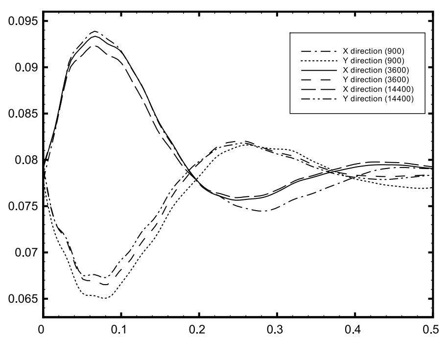
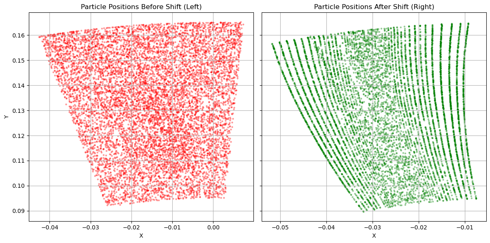

Five defects in solvers I did not write
One in an open-source library, where I could read the source. Four in a commercial code, where I could not. None of them crashed or warned.
One: an open-source library, where I can read the source
Finding it took six experiments. Reporting it took two issues. Fixing it took the maintainers a paper.
In 2023 I was simulating supercooled large droplets hitting an aircraft surface, the physics behind in-flight icing certification. I used SPHinXsys, a well-regarded open-source smoothed-particle-hydrodynamics library, and the droplets kept coming apart.
The obvious conclusion was that I had set it up wrong. That turned out to be false, and establishing it was false is the actual work.
Six experiments, each killing one explanation
A bug report that says "it doesn't work" is worth nothing. What a maintainer needs is the smallest case that fails and the list of things it isn't. So I built a sequence where each step removed a candidate cause.
| Setup | Result |
|---|---|
| 3D droplet impact, Re 7154, We 259 | Droplet breaks up instead of spreading |
| Square droplet relaxing to a circle, Re ≈ 1 | Correct, a clean circle at rest |
| The same at Re ≈ 10³ | Every fluid particle gone by t ≈ 0.4 |
| The same with maximum numerical dissipation | Settles, but drifts off-centre and particles pass through the wall |
| Capillary oscillation against a published benchmark | Diverges even at low Re, once the interface is moving |
| 2D impact, dissipative solver | Disintegrates; particles escape a domain 20× the droplet radius |
The fifth line is the one that decides it. If the failure appears at low Reynolds number as soon as the interface has velocity, it cannot be a high-Re dissipation problem. It is how curvature is computed on a fast-moving interface.

Why nobody had hit it
A failure this stark in a widely used library needs explaining. So I went through every example shipped with it and tabulated the Reynolds and Weber number each one actually exercises.
The high-Re examples are all single-phase, where surface tension never enters. The multiphase examples run at low Re, or drop viscosity and surface tension altogether. Nothing in the suite put high Re and surface tension in the same simulation. The gap sat in untested territory, which is exactly where this kind of thing lives.
This is the part I would want an interviewer to ask about. Not "I found a bug", anyone can hit a bug. The question worth answering is how you tell the difference between a library being wrong and you being wrong, when the library is used by hundreds of people and you have been doing SPH for eight months.
What I built while chasing it
The leading suspect was the library's Riemann solver: it shipped a linearised, Roe-type solver whose numerical dissipation is implicit, so you cannot easily separate the physics from the damping. I implemented an HLLC approximate Riemann solver: wave-speed estimates, contact-wave state selection, equation-of-state recovery of the intermediate state, and wired it into both the fluid–fluid and fluid–wall integration paths.
It did not fix the problem, which is how I knew the surface-tension model was the culprit rather than the solver. Negative results are cheap to hide and expensive to discard.
What happened next
I reported it upstream in #378 (August 2023, the benchmark I could not reproduce), and #497 (December 2023, the high-Re failure with the parameter study).
The maintainers traced it to zero-surface-energy modes (the surface-tension contributions of symmetrically placed neighbours cancel, so the force is underestimated), and fixed it with a momentum-conserving penalty force, reaching Re = 10,000 and We = 25,000. That work was published in Computer Methods in Applied Mechanics and Engineering 444 (2025), and its acknowledgements read:
"Xiangyu Hu appreciates the discussions on high-speed drop impact with Rui Qiao and Nilotpal Chakraborty from Virginia Tech."
To be precise about what that means: I reported the failure and mapped where it appeared. The mechanism, the remedy and the high-Re results are the authors' work, and I am not an author on that paper. The fix shipped in SPHinXsys v1.2.
Two: a commercial solver, whose source I cannot read
While validating particle tracks in ANSYS CFX I found an undocumented particle-tracking error at rotor–stator interfaces in the commercial solver. It does not crash and it does not warn. It produces plausible, wrong answers.
The symptom was erosion maps on the first rotor coming out striped: on the worst case, 46.8% of blade nodes took no impacts at all while their neighbours took many, although particles were injected at random upstream. Stripes are not a flow feature.
I wrote down eight things that could cause it and gave each an experiment that would have made the stripes disappear. Too few particles: inject 1.5 million in one batch. An artifact of the erosion model: bypass it and count raw impacts. Shallow second impacts: delete particles after the first. Seven of the eight changed nothing. The eighth (inject past the stage interface, inside the rotating domain) removed the stripes completely.
To be sure it was the interface and not something travelling with the flow, I removed the flow: rotor speed to 10⁻⁶ rpm, particle density to 10⁹ kg/m³ with all fluid forces disabled. Particle motion is then entirely decoupled from the fluid, and nothing is left that can impose a pattern except the interface itself. The stripes stayed.

It is not a misconfigured switch: the redistribution appears under both the sliding-mesh and the mixing-plane treatment. On a geometry with equal blade counts either side, where no pitch scaling is required, most particles cross untouched, which points at the pitch-change handling rather than at the interface machinery in general. That last step is my reading of the evidence rather than a confirmed cause; the source is closed.
That class of bug is the one worth catching, because nothing downstream tells you it happened. It had already reached conclusions other people were relying on, which had to be corrected, and the group moved to full-annulus geometries for high-fidelity tracking as a direct result.
Three: the same solver again, handing a routine one frame and reading the answer in another
A user routine in that code is given the velocity of an impact measured relative to the wall. Whatever it returns is then applied as though it were absolute. On a stationary wall the two frames coincide and nothing is wrong, which is why the path had survived for years. On a wall that is moving, every fragment leaves short by the speed of the wall.
What put me onto it was a disagreement between a simulation and an experiment that nobody could explain. What proved it was taking the physics out. I built a case with one particle, one impact, two fragments and a single timestep, with no model in the routine at all and both restitution coefficients hardcoded at 0.500, so the correct answer is known by construction. Rotating gave 0.107 normal and 1.464 tangential. The stationary control, identical in every respect but the rotation of the domain, gave 0.5000.
Between those two numbers I eliminated eleven competing explanations, one test at a time. The documentation is the argument: the vendor’s own page on standard particle-wall interaction states that a moving wall requires the wall frame, and its page on the user-defined path describes the returned velocity with no frame specified at all.
The algebraically obvious repair is to add the wall velocity back. It is exact in the box through three chained impacts, and it is unusable in a real machine, where the same correction turns 2,885 impacts into 50.9 million and a median impact speed of 179 m/s into 8,549 m/s. Whether the fault then lies in the returned value or in the solver’s own separation test is not observable from outside, which is where it sits with the vendor. The fix that works goes around the affected path entirely, returning coefficients and a breakup factor rather than a velocity, and the unphysical population it was producing falls from 39.8% to 0.91%.
Four: an undocumented limit, found by asking who the parents were
The same solver silently stops a fragmentation cascade after three generations. It is a hidden expert parameter, it is not in the manual, and it has no effect you would notice: the run completes, the numbers are plausible, and they are low.
I found it by reconstructing lineage. Every impact traced back to the particle it came from, then counted by generation. At generation three no particle ever broke, although 3,773 impacts carried more than enough energy to break one. That is not a model behaving oddly, it is a gate.
Raising the limit moves one modelling route’s count by +30.5% and the other’s by 0.0%, because of how each one assigns a generation to a fragment. So any comparison between the two routes, run at the default, had one side quietly truncated and the other untouched. Every earlier run of that kind in the group was affected, and correcting it is part of why a paper I am an author on has the numbers it has.
Five: the same frame problem in a second code path
A user-defined injection region in the same solver reads the velocity it is given in the lab frame, while the wall routine from section three is handed its velocity relative to the wall. The two paths disagree about the frame in opposite directions.
Here the correction does work. Handing the solver the wall-frame velocity plus Ω × r launches the children exactly. That made a third modelling route possible: stop the parent at the wall and launch its children through an injection region one timestep later. It keeps the six children of the wall-film route, avoids the frame defect of section three, and is immune to the generation cap of section four, with 1413 fragments at cap 3 against 1407 ± 8 at cap 10 over twelve seeds. The box case is in cfx-wall-film-breakage.
A separate finding from the reduced-order model, a constant in the code that disagreed with its own derivation, is on its own page.
The code
sph-high-re-surface-tension holds the diagnostic sequence, the HLLC Riemann solver I wrote while chasing the failure, and the parameter studies underneath it: a screening design over reference velocity and viscosity, a one-factor-at-a-time sweep of density, viscosity, surface tension and length scale, a ladder of dissipation-limiter settings, and a 2 × 2 factorial on Poiseuille flow, which is the only case there with a closed-form answer to check against. Video of all 29 runs.
One result in it that is not in the issue reports: driving the limiter to η = 10²⁰ does not recover the dissipative solver, maximum spread ratio 7.8 against 5.37 on the same 2D case. The clamp in the acoustic form zeroes the dissipation on expansion however large η becomes, so tuning η against experiment sweeps a family that never reaches the dissipative solver as an endpoint.
cfx-wall-film-breakage holds the third and fourth: the minimal reproducer with both coefficients hardcoded at 0.500, the measurement that reads the parent’s last record and the child’s first rather than sampling one continuing track, and a note on the generation cap written for other CFX users, since anyone running wall-film breakage at the default is affected and will not be told. It also carries a decisions file recording three explanations I held and had to withdraw, including one where I blamed the solver for destroying data and the instrumented run showed the fault was in my own branch.
cfx-interface-particle-shift holds the second one: the eight hypotheses and what each experiment did, the isolation test, the measured displacements, and a diagnostic that finds the interface crossing by looking for a discontinuity in each particle track rather than by knowing where the interface is, so it works on any case. It also carries the five-geometry comparison, and reproduction steps that use an axial turbine shipped as an ANSYS tutorial, so anyone with a licence can run it.